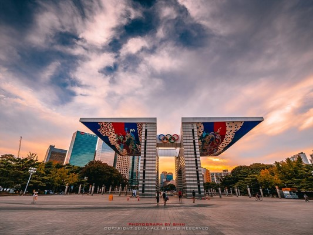
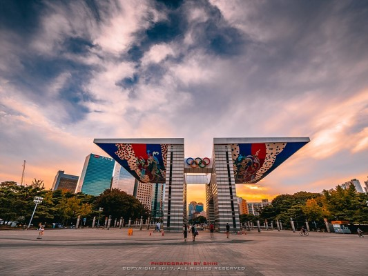
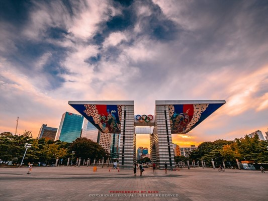
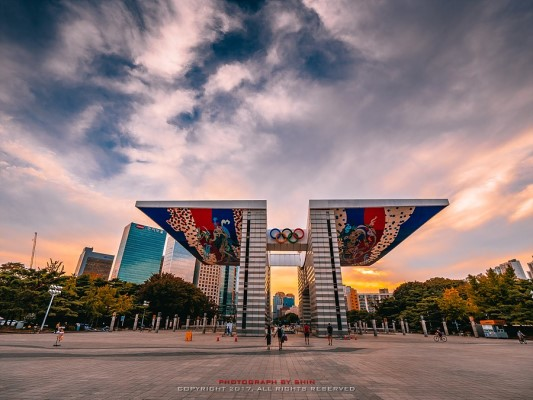

Beautiful place of Songpa

 



Lotte World Tower (Hangul: 롯데월드타워) is a 123-floor, 554.5-metre (1,819 ft) supertall skyscraper located in Seoul, South Korea. It opened to the public on April 3, 2017 and is currently the tallest building in South Korea, and is the 5th tallest building in the world.
Seokchon Lake was originally a part of the Han River. There was an island named Burido in the middle of the Han River dividing it into two, Songpa River (the north part) and Sincheon River(the south part). In April 1971, a construction to connect Burido with land has started. It was proceeded by enlarging the Songpa River and closing the Sincheon River. By this construction, the closed southern part of the Han River became Seokchon Lake, and the land made by the reclamation project became Jamsil-dong and Sincheon-dong. In the 1970s, Seokchon Lake used to be a tacky lake right after the construction. So people created a walking trail and planted trees, transforming the area into a park. After some time, Seokchon Lake started to suffer from water pollution, causing foul smells. This caused people to avoid Seokchon Lake Park. In 2001, Songpagu designated it to make into a tourist attraction and did some maintenance business. This caused the water to become clear and the ecological system to be recovered.
The Olympic Park is located in 424 (Bangdong 88-2), an Olympic road in Songpa-gu, Seoul. It was built for the 1988 Seoul Olympics and is now used as a general park. It has six sports facilities including a cycle, weightlifting, fencing, swimming, gymnastics and tennis, and a variety of cultural facilities including the Soma Museum. Mongchon Fortress, a Baekje site discovered during the construction of Olympic Park, is located inside the park. The Olympic Park has outdoor sculpture parks, 88 theme parks, and rest areas such as music fountains. Other major facilities include Olympic Hall, Olympic Parktel, and Mongchon History Hall.